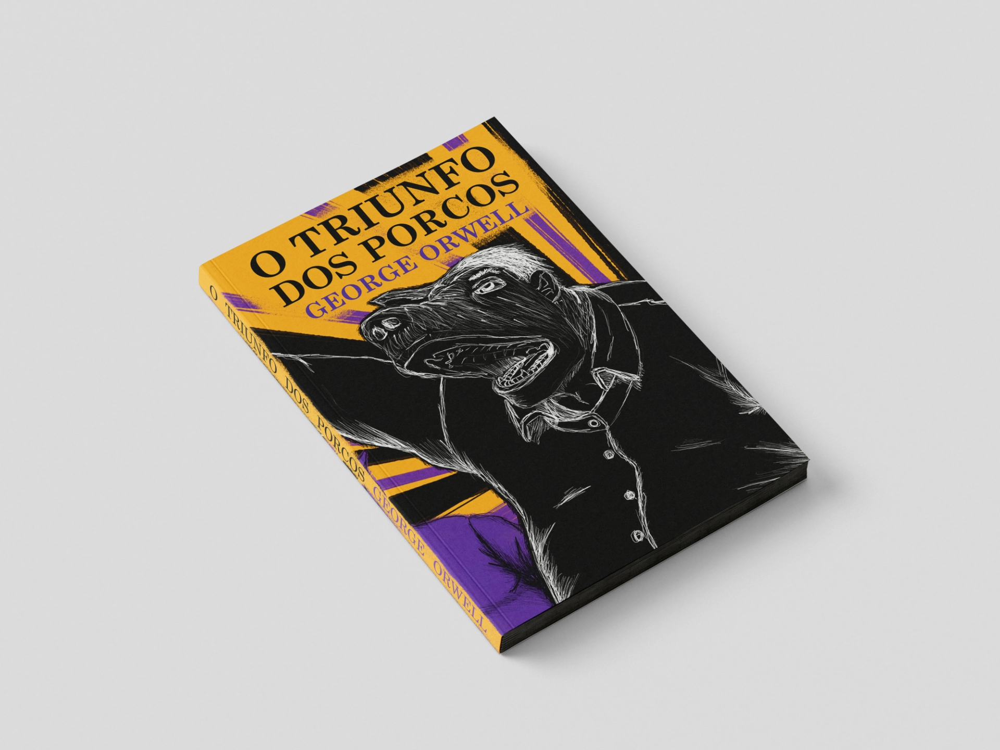

JORGE DUARTE
DESIGNER DE COMUNICAÇÃO
Partilho um exercício que realizei para uma candidatura, onde o objetivo era desenvolver uma capa para a obra "O Triunfo dos Porcos" de George Orwell, deixando ao meu gosto a estética do artefacto. Era pedido apenas a frente da capa, mas acabei pelo entusiasmo desenvolver três versões, onde uma delas mixa as duas versões anteriores.

.webp)
.webp)
Inspirei-me no filme "Animal Farm" de 1954, onde os porcos tiranos tornam-se humanos. As ilustrações captam essa transição subtil, mas sem esconder a mensagem da obra. Na segunda versão questionei-me quanto à estética usada anteriormente e desenvolvi uma versão simples. Por fim juntei as duas, deixando a primeira versão como uma capa de proteção para um artefacto de capa dura e simples.
.webp)
.webp)
Aproveitei o exercício para descobrir e aprender a usar o Affinity como ferramenta gratuita para a minha área. No qual foi do meu apreço usar o programa e espero futuras atualizações, como aprender mais sobre o mesmo. Tal como usei a mesa digitalizadora que estava parada há algum tempo. O texto usado nas capas fora retirado da Bertrand e Porto Editora.
.webp)
Jorge Duarte | Candidatura Emprego (2026) | Editoral, Capa | Affinity e Photoshop